速览
游戏的效果音多种多样，说一直在响也不为过。多数时候会准确或夸张地表现那个声音，但其音量、华丽度、显眼程度必须好好考虑。例如步行声和剑空挥的声音，都像是很小的声音，该优先哪个？游戏里声音非常多，又是模仿对应动作做出来的，有时判断会犯难。他的建议是：声音的优先度和大小，与玩家关系越大的越大——这种思路比较合适。以《大乱斗》为例粗略说明（省略细节）：音量最大的应该是击坠声，无论击坠别人还是被击坠，都是决定博弈和胜负的大事件，最重要。其次是命中音等，即打中对手、被打中时：这是自己行动的结果直接返回的瞬间，要好好演出；完美防御等也同等。必杀技的效果音（不是命中、而是普通出招时）：使出个性鲜明的招式，要相应显眼，当然实际音质因招的强度、性质而各异。语音与必杀技同等较妥当，但清楚说话会比效果音更显眼，需要平衡。爆炸大概在命中与必杀之间，大的更突出。接着是回避、护盾、抓崖等满足某些条件触发、产生预期效果的动作。再接着是攻击空挥等，到这里已经相当难听到了，但它是按按钮的操作结果，要一定程度突出；弹摇杆的冲刺也差不多。然后是跳跃、着地等伴随小移动的动作：着地是反应，比跳跃稍大；着地也很深奥，按服装、靴子材质分别重做——克劳德甚至有服装造成的着地音差，好音箱能分辨。最后是步行：也是操作结果，对战中几乎听不到，但有个性，每加一个斗士都重做检查；脚步声要做出变化，同样的声音连续排列太机械。另外 3D 游戏中步行优先度可以更高：很多游戏几乎听不到，像悬浮移动，有点不满足；按地面材质（属性、材质）改变步行与着地音很麻烦，但真实感能带来确实的手感。回顾效果音音量时，要考虑在该游戏中的重要度，尤其对玩家角色的影响度来定优先级；只看声源大小是得不到妥当结果的。
1. 效果音的平衡 0:04
游戏的效果音多种多样，说一直在响也不为过。多数时候会准确或夸张地表现那个声音，但其音量、华丽度、显眼程度必须好好考虑。
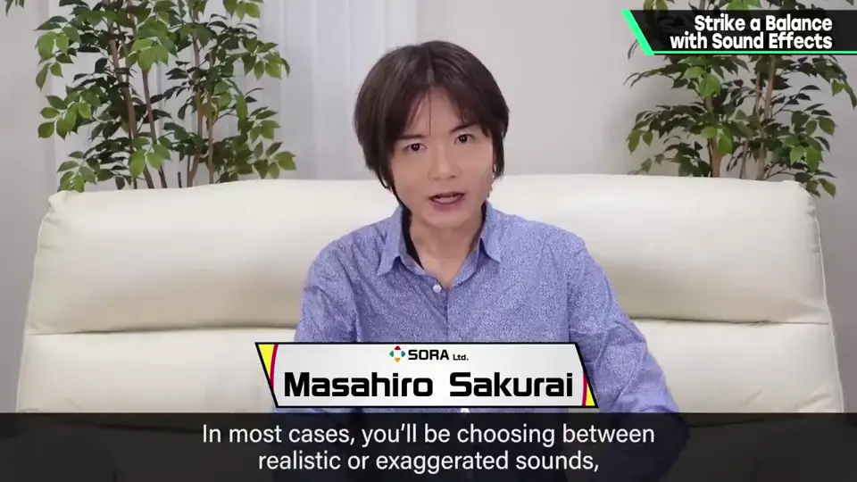
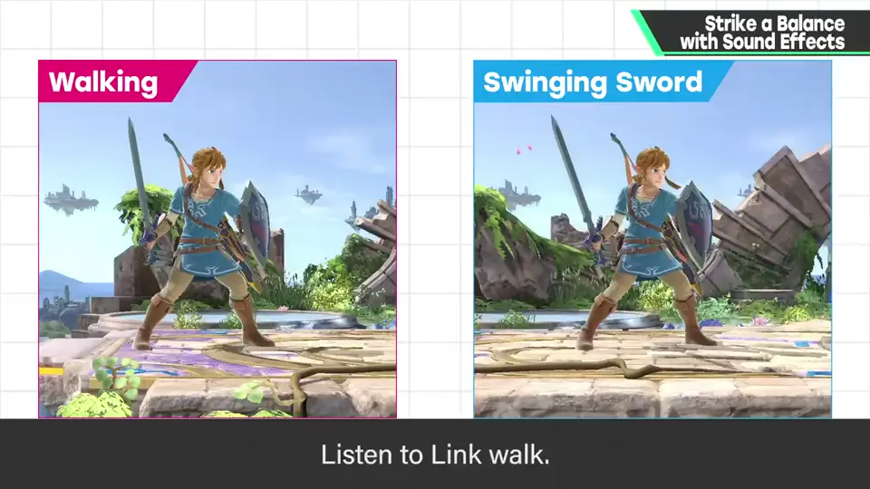
例如步行声和剑空挥的声音，都像是很小的声音，该优先哪个？
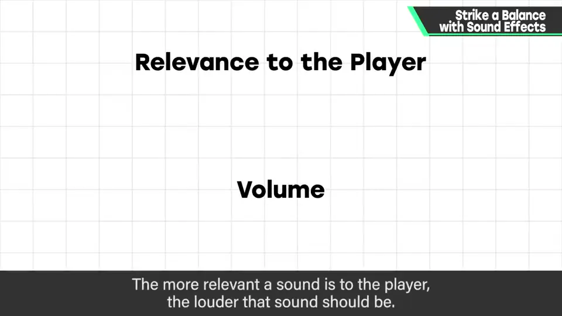
2. 《大乱斗》的优先顺序 0:56
以《大乱斗》为例粗略说明（省略细节）。
3. 击坠与命中 1:02
音量最大的应该是击坠声：无论击坠别人还是被击坠，都是决定博弈和胜负的大事件，最重要。
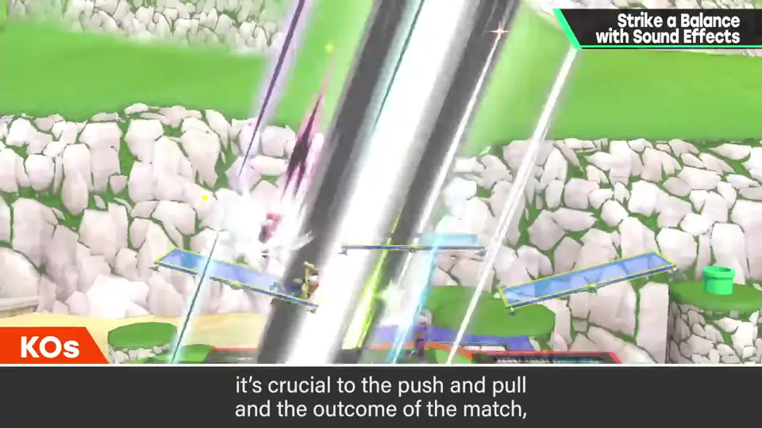
其次是命中音：打中对手、被打中时。这是自己行动的结果直接返回的瞬间，要好好演出；完美防御等也同等。
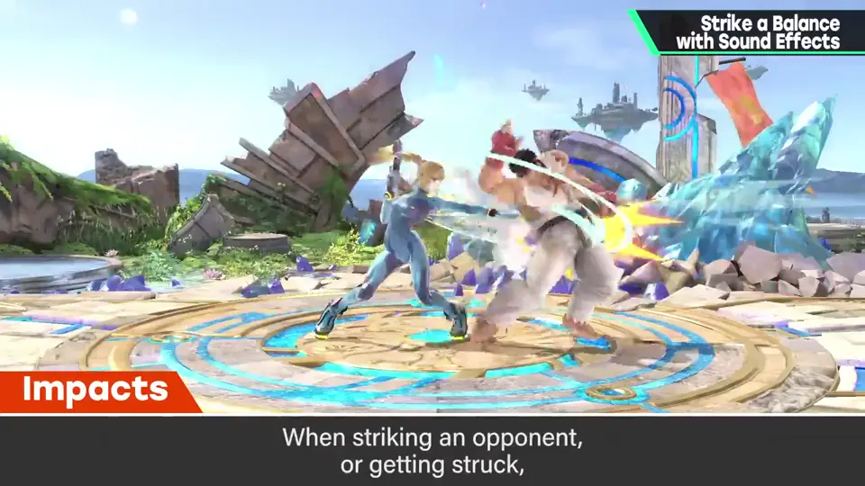
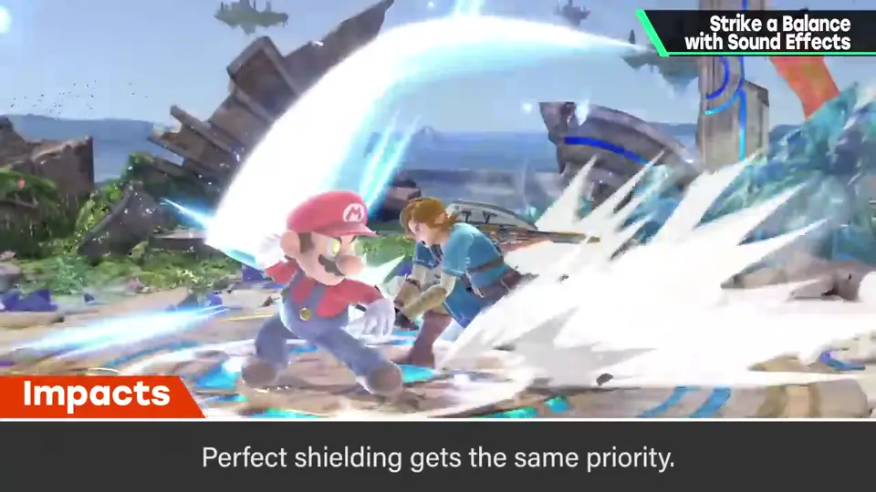
4. 必杀技、语音、爆炸 1:38
必杀技的效果音（普通出招时）：使出个性鲜明的招式，要相应显眼；当然实际音质因招的强度、性质而各异。
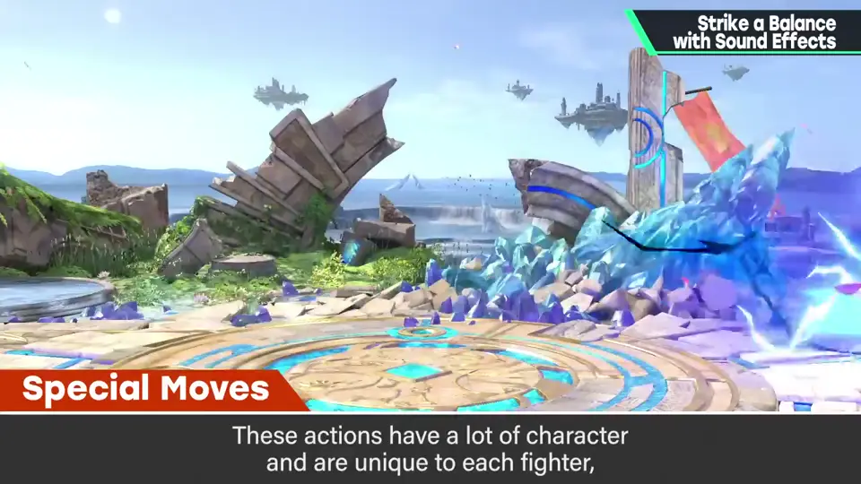
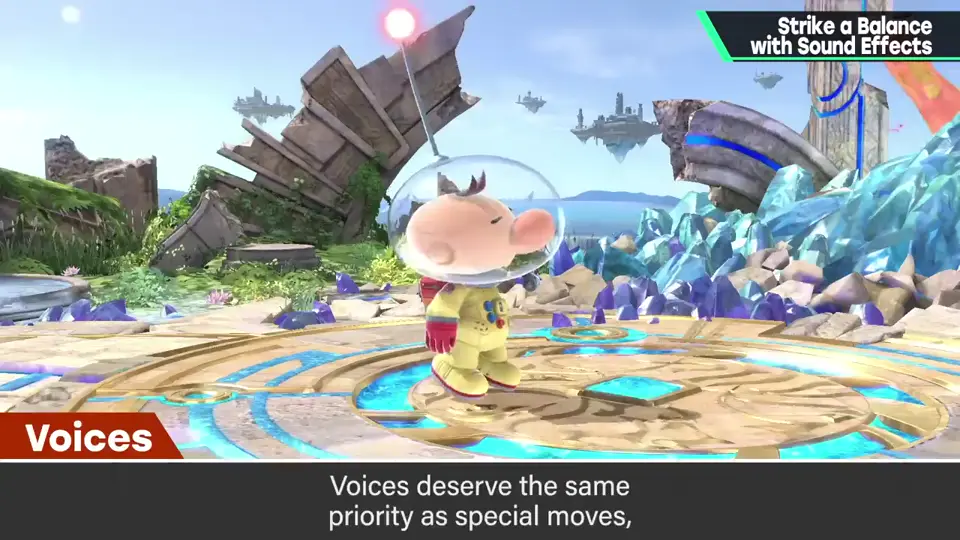
语音与必杀技同等较妥当，但清楚说话会比效果音更显眼，需要平衡。
爆炸大概在命中与必杀之间，大的更突出。
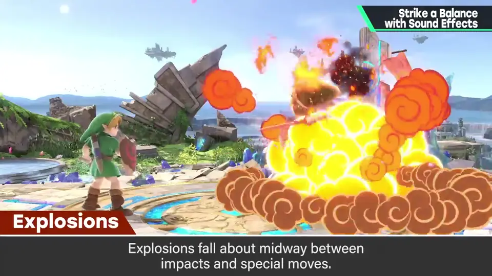
5. 条件动作与空挥 2:13
接着是回避、护盾、抓崖等满足某些条件触发、产生预期效果的动作。
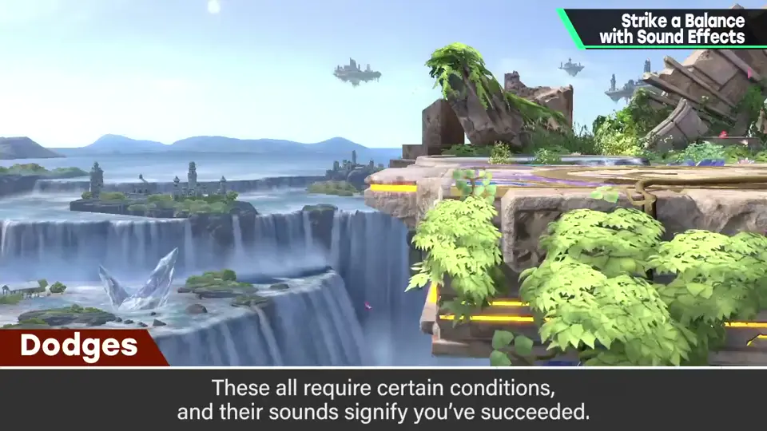
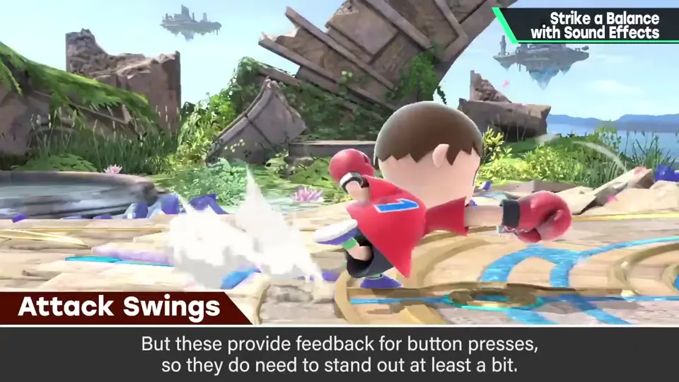
再接着是攻击空挥等：到这里已经相当难听到，但它是按按钮的操作结果，要一定程度突出。弹摇杆的冲刺也差不多。
6. 跳跃、着地、步行 2:45
然后是跳跃、着地等伴随小移动的动作：着地是反应，比跳跃稍大。着地也很深奥，按服装、靴子材质分别重做——克劳德甚至有服装造成的着地音差，好音箱能分辨。
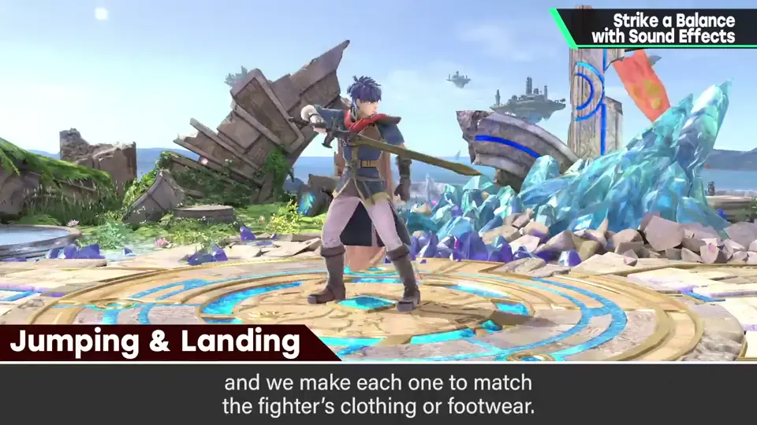
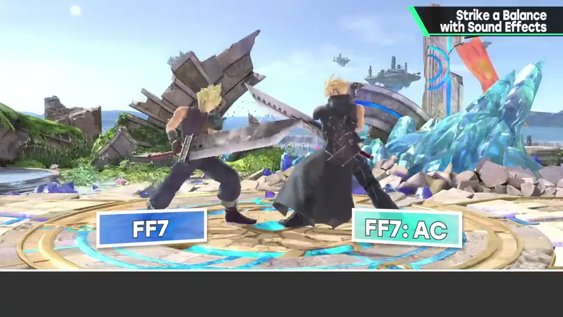
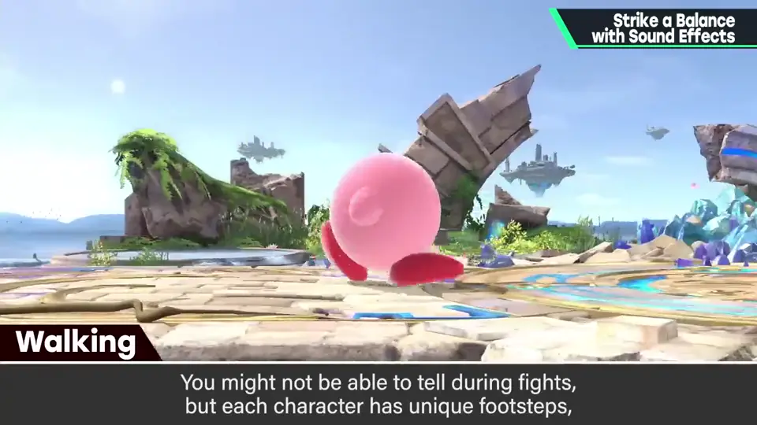
最后是步行：也是操作结果，对战中几乎听不到，但有个性，每加一个斗士都重做检查。
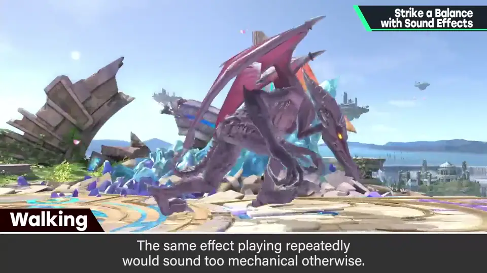
7. 3D 游戏的步行 3:45
3D 游戏中步行优先度可以更高：很多游戏几乎听不到，像悬浮移动，有点不满足。
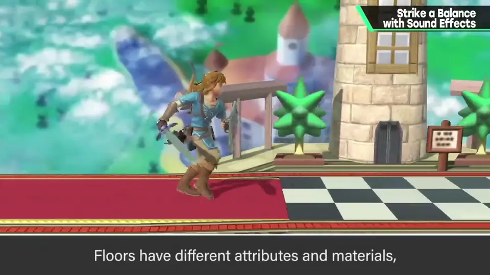
按地面材质改变步行与着地音很麻烦，但真实感能带来确实的手感，只能努力。
8. 总结 4:21
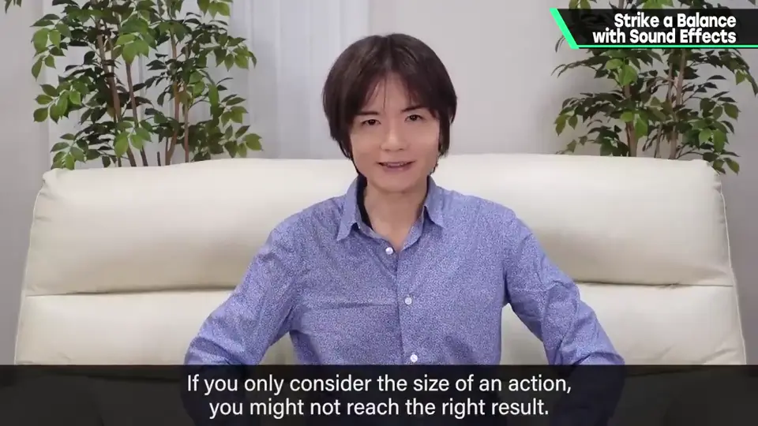
自测题
1. 决定效果音大小的原则是什么？
与玩家关系越大的声音越大，而不是只看声源大小。 0:50
2. 《大乱斗》中音量最大的是什么声音？为什么？
击坠声：决定博弈和胜负的大事件。 1:10
3. 脚步声要注意什么？
做出变化，避免同一声音连续太机械；3D 游戏可按地面材质变化、优先度更高。 3:35